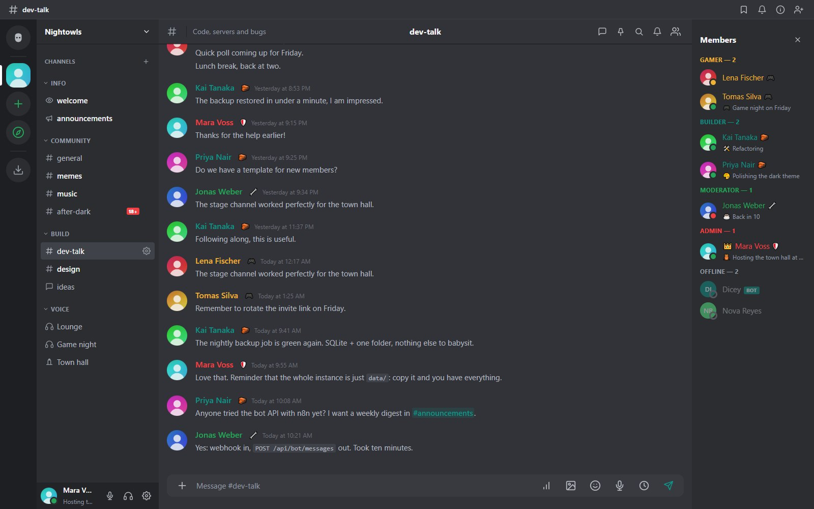
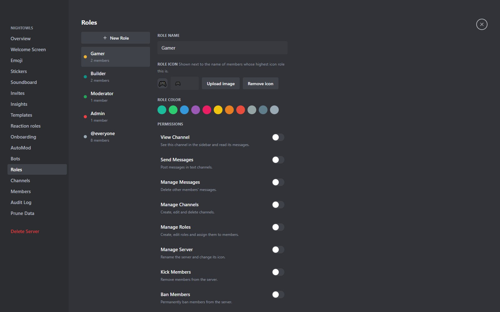
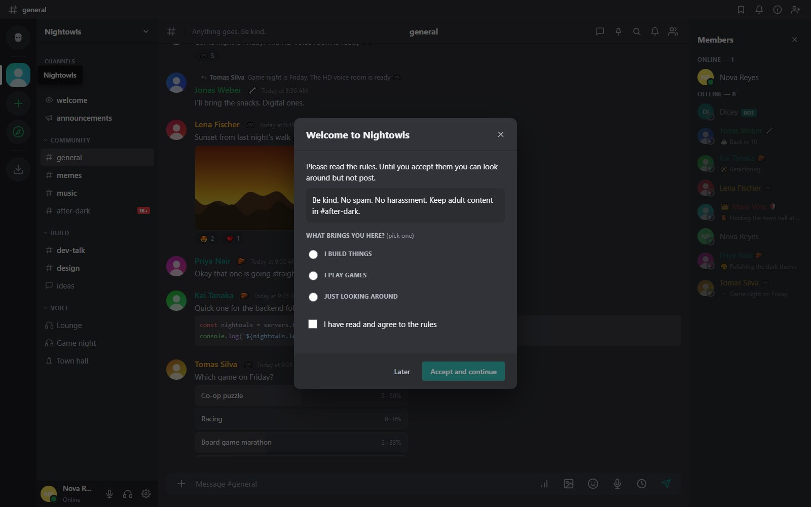
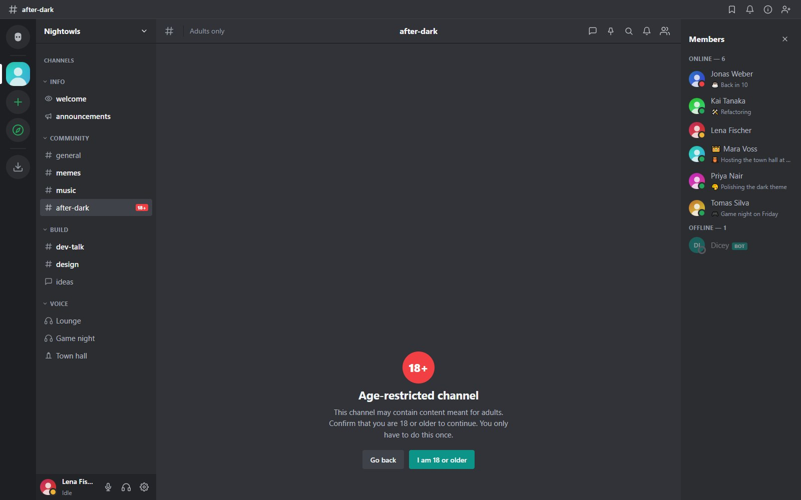
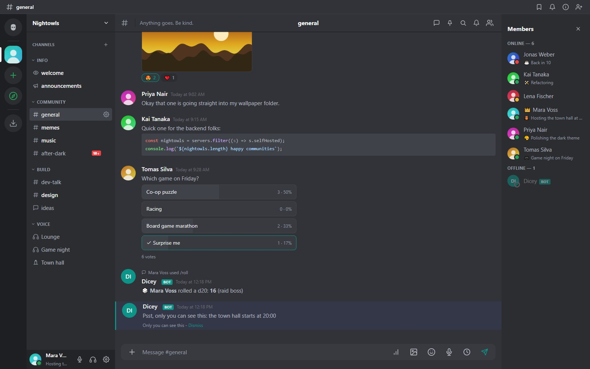
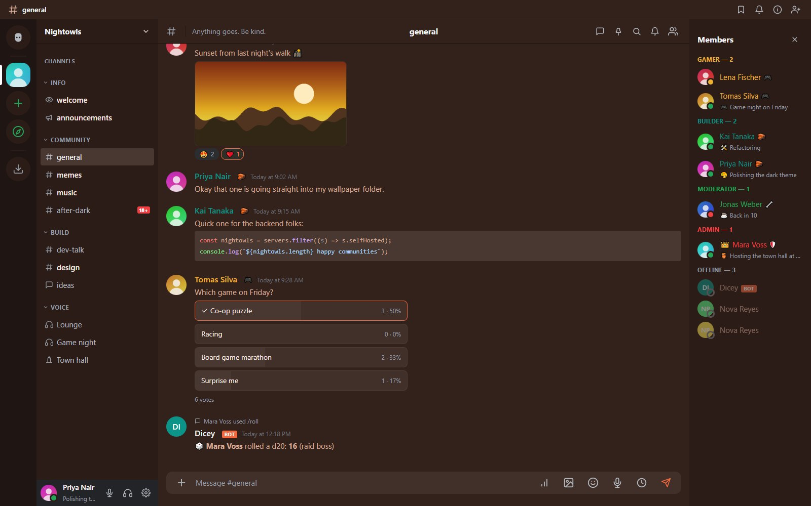
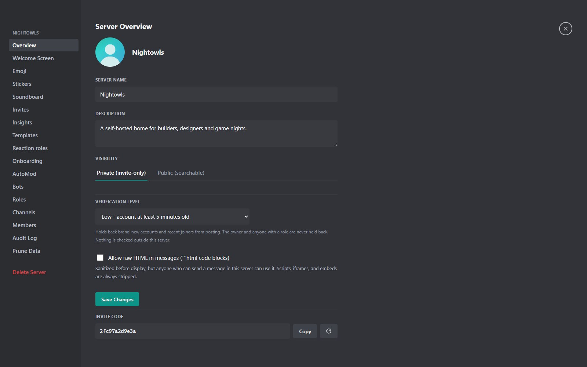

Funkciók
Egy teljes közösségi platform: chat, ami néhány baráttól egy forgalmas szerverig skálázódik, hívások médiaszerver nélkül, és az eszközök, amikkel rendben tarthatod az egészet.
Üzenetküldés
Minden, amit egy modern chattől vársz, az érdes élek lecsiszolásával.
- Szerkesztés, törlés, válasz, továbbítás és reakció Unicode és egyéni emojikkal, plusz matricák.
- Szálak bármely üzenetből és fórumcsatornák, amelyek teljesen szálas bejegyzésekből állnak, csatornánkénti Szálak panellel. A fórumbejegyzések kártyaként jelennek meg előnézettel, bélyegképpel, kereséssel és rendezéssel.
- Piros „Új” vonal jelöli az első olvasatlan üzenetet egy csevegés megnyitásakor, és a nézet oda ugrik. Te döntöd el, milyen messzire ugorjon, és hány üzenet töltődjön be.
- Szavazások, kitűzések, linkelőnézetek, kódblokkok szintaxiskiemeléssel és spoilerek.
- Hangüzenetek öt percig, beépített lejátszóval, a böngészőben, az asztali alkalmazásban vagy a telefonon rögzítve.
- Időzített üzenetek: válassz időpontot, és az üzenet a nevedben megy ki, ugyanazokkal az ellenőrzésekkel, mint egy sima üzenet.
- Keresés az üzenetszövegben (SQLite FTS5), a felhasználónevekben, a csatornanevekben és a mellékletnevekben.
- Üzenetenként legfeljebb öt melléklet, opcionális képátméretezés feltöltés előtt és lejátszás/szünet gomb a GIF-eken.
- Automatikus kiegészítés @megemlítésekhez, #csatornákhoz, emoji-rövidkódokhoz és perjeles parancsokhoz.

Hang és videó
A hívások WebRTC-n keresztül, közvetlenül a résztvevők között futnak: nincs médiaszerver, amit telepíteni, üzemeltetni vagy fizetni kellene.
- Hangcsatornák, színpadcsatornák és privát hívások kamerával és képernyőmegosztással, külön csempékként.
- Minőség-előbeállítások a csatorna létrehozásakor: Mobil, Alacsony, Közepes, Magas és HD Zene, 8 kHz-től egészen 48 kHz sztereóig.
- Opcionális RNNoise zajszűrés, egy kis neurális hálózat, ami a te eszközödön fut.
- Személyenkénti hangerő, beszédjelző gyűrűk, élő szintcsík, bemeneti eszköz választó és szerver-hangpult.
- Színpadcsatornák előadókkal és hallgatósággal, kézfelemelés és beszédre hívás.
- Mindenki némítása a moderátoroknak, és teljes képernyő bármely videócsempéhez.
- Átméretezhető hívási panel: nagy, görgethető csempék a szöveges csevegés fölött, és egy húzható elválasztó, amivel a szobának vagy a csevegésnek adhatsz több helyet.
- Beépített STUN és TURN, hogy a hívások routereken és NAT-on át is létrejöjjenek külső szolgáltatás nélkül. Alapból kikapcsolva, egyetlen szkripttel vagy az Adminpanelből állítható be.

A teljes hálóban minden résztvevő mindenki másnak küld, ezért nagyjából nyolc vagy több fős, videós hívásokhoz jó feltöltési sávszélesség kell. Egy hálózaton a hívás magától működik. Különböző hálózatokon lévőknek kapcsold be a beépített STUN- és TURN-szervert (setup-turn.bat vagy Adminpanel, Hívások), és a routeren irányítsd át a 3478 UDP és TCP, valamint a 49152-49999 UDP portokat. Csak a hívások hangja és képe használja; a csevegés és a jelzések mindig a szervereden mennek át. Hogyan állítsd be.
Szerverek, csatornák és szerepkörök
Semmi nincs beégetve: a szerepkörök szerkeszthető jogosultsági bitek, és minden csatorna felülbírálhatja őket.
- Kategóriák, a csatornák és kategóriák húzással rendezhetők.
- Szerepkörök 17 jogosultsággal, színekkel és ikonokkal (emoji vagy kép). Senki nem adhat olyan jogot, ami neki magának nincs meg.
- Szerepkörönkénti és felhasználónkénti csatorna-felülbírálások, lassított mód, témák, ikonok és üdvözlőképernyő.
- Privát Jegyzetcsatornák: titkosított jegyzetfüzet minden tagnak, amit még az adminok sem olvashatnak.
- Személyes szerversáv mappákkal, és nyilvános szerverek felfedezhető könyvtára.

Közösségi eszközök
Növeld és gondozd a közösségedet bármilyen külső szolgáltatás nélkül.
- Meghívók, amelyek lejárnak és használati korláttal bírnak, plusz egy egyedi link, amit kód helyett be lehet gépelni.
- Meghívólinkek: a
/i/<kód>egy csatlakozóoldalt nyit Csatlakozás böngészőben és Megnyitás az alkalmazásban gombbal (azmcr://linkek az asztali és az Android-alkalmazást nyitják meg, csatlakozás előtt mindig rákérdeznek). - Üdvözlés: az újak elolvassák a szabályokat, válaszolnak legfeljebb öt, szerepkört osztó kérdésre, és elfogadják, mielőtt írhatnának.
- Reakciószerepkörök: reagálj egy emojival, és megkapod a szerepkört, igény szerint kizárólagosan.
- Szerversablonok, amelyek a szerkezetet és a jogosultságokat másolják, sosem az embereket, üzeneteket vagy meghívókat.
- Statisztika növekedési és aktivitási diagramokkal 7-től 90 napig.
- Időzített események jelentkezéssel, és üdvözlőképernyő kiemelt csatornákkal.

Moderáció és biztonság
Gyakorlatias eszközök, amelyek a probléma elterjedése előtt lépnek, és nyomot hagynak arról, mi történt.
- AutoMod: tiltott szavak, linkek (tiltás, engedélyezési vagy tiltólista), tömeges megemlítés, spam és túl sok nagybetű, opcionális időkizárással és kivételekkel.
- Ellenőrzési szintek, amelyek visszatartják a vadonatúj fiókokat és a frissen csatlakozókat. Minden helyi; nincs e-mailes vagy telefonos ellenőrzés.
- Korhatáros csatornák egyszeri megerősítés mögött. Semmit nem igazolunk, és semmi nem hagyja el a szerveredet.
- Kirúgás, tiltás, időkizárás, naplózás és egy felhasználói bejelentési sor.
- Adattisztítás: egy adott dátumnál régebbi előzmények törlése előnézettel és opcionális 24 órás előzetes értesítéssel.

Botok és automatizálás
Egy botfiók lehet MI-beszélgetőtárs, szkriptelt integráció, vagy mindkettő.
- MI-botok Ollama vagy bármely OpenAI-kompatibilis szolgáltatás mögött. A megemlítésekre válaszolnak, és ha engedélyezed, privát üzenetekre is.
- Bot API tokenekkel és HMAC-aláírt kimenő webhookok, amelyek az n8n-nel, szkriptekkel és CI-vel működnek.
- Perjeles parancsok, amelyeket egy bot tesz közzé típusos opciókkal, felugró listával az üzenetmezőben és chipekkel a telefonon.
- Átmeneti válaszok, amelyeket csak a parancsot kiadó személy lát, és soha nem tárolódnak.
- Bejövő webhookok csatornánként olyan szkriptekhez, amelyeknek csak posztolni kell.

Mindent, amit egy MI-botnak elküldenek, a szolgáltatója kap meg. A botok sosem olvasnak végpontig titkosított privát üzeneteket, csoportos privát üzeneteket vagy Jegyzetcsatornákat, és csak azokat a csatornákat látják, amelyeket a szerepkörük láthat.
Oldalak (Sites)
Az Oldal (Site) egy olyan szervertípus, amely PHP, HTML, CSS és JS oldalak egy mappáját szolgálja ki az alkalmazáson belül: csapat-wiki, beosztás, egy kis eszköz.
- Megjelenik a szerversávban, és azonos eredetű keretben jelenik meg, csatornák és értesítések nélkül.
- Beépített kódszerkesztő (CodeMirror) és vizuális szerkesztő (TinyMCE), amely érintetlenül hagyja a PHP-blokkokat.
- Windowsra hordozható PHP futtatókörnyezet jár mellé; máshol használd a saját PHP-dat.
Az Oldalak a MeshCrowd részeként futnak. Csak olyanoknak adj szerkesztési jogot, akiknek szerverhozzáférést is adnál.
Föderáció
Két szerver párosítható, hogy az egyiken lévő emberek elérjék a másikon lévőket. Alapból kikapcsolt, és sosem történik véletlenül.
- Párosítás meghívólinkkel; mindkét oldal kifejezetten elfogadja vagy elutasítja a másikat, a visszavonás pedig mindkét oldalon megszünteti a bizalmat.
- Barátkérések és privát üzenetek megosztása, egymás nyilvános szervereinek listázása és csatlakozás
kód@domainmeghívóval. - A távoli szerverek élőben, proxyn át jelennek meg, soha nem másolódnak. A jogosultságokat mindig a közösséget birtokló szerver dönti el.
Azonosság és adatvédelem
Erős alapértékek és őszinte dokumentáció arról, hol vannak a korlátok.
- Útlevél (Passport): a böngésződben létrejövő fiókkulcspár, titkosított
.mcpassfájlként exportálható belépéshez és helyreállításhoz. - Megerősített bejelentkezés: a bejelentkezési kulcsot a böngésző származtatja; a szerver sosem látja egy webes fiók jelszavát.
- Végponttól végpontig titkosított privát üzenetek biztonsági számokkal és kulcsrögzítéssel.
- Kétlépcsős azonosítás TOTP-vel és helyreállító kódokkal, visszavonható szerveroldali munkamenetek és sebességkorlátozás.
- Alapból HTTPS automatikus tanúsítvánnyal, vagy hozd a sajátodat.
Olvasd el a biztonsági modellt a részletekért és az ismert korlátokért.
Személyre szabás
A felület az emberekhez igazodik, nem fordítva.
- Felhasználónkénti témák: előbeállítások vagy saját színek, betűtípusok és háttérátmenet, kivágatként megosztható.
- Profilok avatárral, bannerrel, bemutatkozással, egyéni státusszal és jelenléttel, plusz státuszonkénti hangszabályok.
- Átméretezhető oldalsávok, névszínek, szervermappák és nyelvváltó (angol és magyar).

Kliensek
Használd azt, ami éppen kézre áll. Mind ugyanahhoz a szerverhez beszél.
Web
Nincs mit telepíteni, minden funkció elérhető bármely modern böngészőben.
Asztali
Tálcaikon-jelvény saját színekkel, natív értesítések, tálcára zárás és tanúsítvány-rögzítés önaláírt szerverekhez.
Android
Telefonra tervezett felület helyi háttérértesítésekkel és opcionális UnifiedPush-sal, Google-szolgáltatások nélkül.
Adminisztráció
Üzemeltesd szolgáltatásként, akkor is, ha egy kis gépen él.
- Adminpanel statisztikákkal, felhasználókezeléssel, személyzeti rangokkal és az egész példányra kiterjedő szerverkezeléssel.
- Futásidőben állítható feltöltési méretkorlát és opcionális kiterjesztés-engedélyezőlista.
- Hordozható csomag saját futtatókörnyezettel, és mentés, ami egyszerűen egy mappa másolata.
- Sok automatizált teszt (a készlet jelenleg több mint 700-at tartalmaz).
